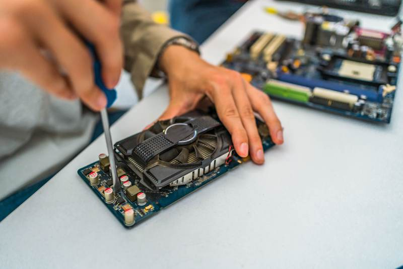

Understanding Your Needs
When your computer malfunctions, finding the right repair service is essential. It’s important to first understand your specific needs. Are you dealing with hardware issues like a broken screen or software problems such as virus infections? Knowing the nature of your problem can help narrow down your options, ensuring you choose a service that specializes in solving your particular issue.
Research and Reviews
Conducting thorough research is crucial when selecting a computer repair service. Start by checking online reviews and testimonials from previous customers. Websites like Yelp and Google Reviews can provide insights into the service quality and customer satisfaction levels of potential repair shops. Pay attention to both positive and negative reviews to get a balanced perspective.
It's also beneficial to seek recommendations from friends and family who have had similar issues. Personal referrals can often lead you to reliable and trustworthy services that they have successfully used in the past.
Checking Credentials and Experience
Before entrusting your device to any service provider, verify their credentials. Ensure that the technicians are certified and have adequate experience in handling computer repairs. Certifications from reputable organizations can be a sign of professionalism and expertise. Additionally, inquire about how long they've been in business, as experienced providers are more likely to deliver efficient and effective services.
Service Guarantees and Warranties
A reliable computer repair service should offer guarantees and warranties on their work. This indicates confidence in their services and provides you with peace of mind. Before committing, ask about the types of guarantees they provide and the duration of warranties on parts and labor. A trustworthy service will be upfront about these details.
Cost and Transparency
Cost is always an important factor when selecting a repair service. Obtain quotes from multiple providers to compare prices. Beware of services that offer prices significantly lower than the average, as this may indicate subpar quality or hidden charges. A reputable service will provide transparent pricing and a detailed explanation of what each fee entails.

Turnaround Time
Time is often of the essence when it comes to computer repairs. Inquire about the typical turnaround time for repairs to ensure it fits within your schedule. Some services offer expedited repairs for an additional fee, which can be worthwhile if you need your device back quickly.
Customer Service and Communication
Excellent customer service is a hallmark of a good repair shop. Pay attention to how staff communicate with you during your initial inquiries. Are they patient, clear, and helpful? Good communication ensures you stay informed throughout the repair process, reducing frustration and uncertainty.
Location and Accessibility
Lastly, consider the location and accessibility of the repair service. Choosing a service close to your home or office can save time and transportation costs. Additionally, some providers offer on-site repairs or pick-up and delivery services, adding convenience to the process.
By following these expert tips, you can confidently choose a computer repair service that meets your needs, ensuring your device is in capable hands.